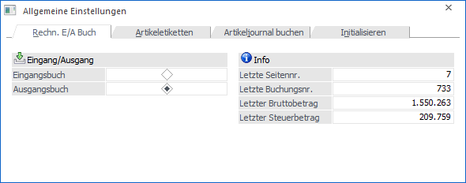
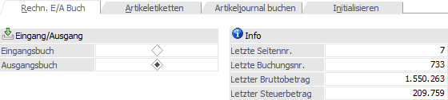
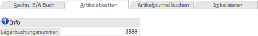
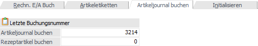
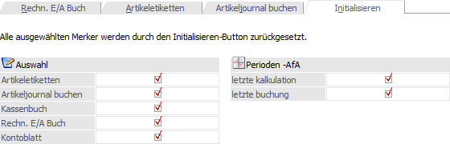

Im Menüpunkt…
1 Parameter
1 Allgemeine Einstellungen
…können Änderungen für den Ausdruck gewisser Datenbereiche vorgenommen werden.

Diese Einstellungen dürfen nur dann geändert werden, wenn z.B. beim Tagesausdruck des Rechnungseingangsbuches der Druckjob gelöscht wurde oder dergleichen.
Register "Rechn. E/A Buch"

Für den Ausdruck des Rechnungseingangs- bzw. -ausgangsbuches können folgende Felder bearbeitet werden.
Achtung
Diese Felder dürfen nur dann geändert werden, wenn ein Ausdruck eines Tagesausdruckes wiederholt werden muss. Ansonsten ist eine Änderung dieser Werte nicht zulässig.
Ø Eingangsbuch / Ausgangsbuch
Hier kann entschieden werden, für welchen Datenbereich die Einstellungen durchgeführt werden sollen.
Ø Letzte Seitennr.
Die letzte Seitennummer, die beim Rechnungsbuch verwendet wurde, wird angezeigt und kann überschreiben werden.
Ø Letzte Buchungsnr.
Es wird die letzte Buchungsnummer, mit der eine Ein- bzw. Ausgangsbuch gedruckt wurde, angezeigt und kann überschrieben werden.
Ø Letzter Bruttobetrag
Der zuletzt ausgewiesene Gesamt-Bruttobetrag wird angezeigt und kann verändert werden.
Ø Letzter Steuerbetrag
Der zuletzt ausgewiesene Gesamt-Steuerbetrag wird angezeigt und kann ggfs. geändert werden.
Artikeletiketten

Hier wird die Journalnummer angezeigt, bis zu den Artikeletiketten auf Basis des Journals gedruckt wurden. Muss der Druck von Artikeletiketten auf Basis von Journalzeilen wiederholt werden, kann im Feld "Lagerbuchungsnummer" die Journalnummer geändert werden, bis zu welcher der Druck der Journalzeilen bereits erfolgte.
Artikeljournal buchen

Hier werden die letzten Lagerbuchungs-Journalnummern angezeigt, bis zu denen automatische FIBU-Buchungen erzeugt wurden (getrennt nach Artikeljournal und Rezeptartikeln). Durch ein Zurücksetzen können die automatischen FIBU-Buchungen auf Basis der manuellen Lagerbuchungen bzw. der Rezeptartikel neu erstellt werden.
Initialisieren

In diesem Register können diverse Einstellungen, welche von der WinLine automatisch durch gewisse Aktionen vergeben wurden, rückgesetzt werden.
ü Artikeletiketten
Die
Journalnummer, bis zu der Artikeletiketten auf Basis des Journals gedruckt
wurden, wird auf 0 gesetzt.
ü Artikeljournal buchen
Die
Journalnummer, bis zu der das Artikeljournal gebucht wurde, wird auf 0
gesetzt.
ü Kassenbuch
Die Journalnummer,
bis zu der das Kassenbuch gedruckt wurde, wird auf 0 gesetzt.
ü Rechn.E/A Buch
Die letzte
Buchungsnummer, bis zu der das Rechnungsbuch gedruckt wurde, wird wieder auf 0
gesetzt.
ü Kontoblatt
Die Buchungsnummer,
bis zu der Kontoblätter im Originalausdruck gedruckt wurde, wird auf 0
gesetzt.
ü letzte kalk. Perioden - AfA
Die
Information, wann die letzte kalkulatorische Perioden-AfA durchgeführt wurde,
wird gelöscht.
ü letzte buch. Perioden - AfA
Die
Information, wann die letzte buchhalterische Perioden-AfA durchgeführt wurde,
wird gelöscht.
Buttons
Ø Ok
Durch Anwahl des Buttons "Ok" bzw. der Taste F5 werden die Eingaben gespeichert.
Ø Ende
Bei Anwahl des Buttons "Ende" bzw. der Taste ESC wird das Fenster geschlossen und alle nicht gespeicherten Änderungen verworfen.
Ø Initialisieren (nur im Register "Initialisieren")
Durch Anklicken dieses Buttons werden alle ausgewählten Datenbereiche zurückgesetzt.